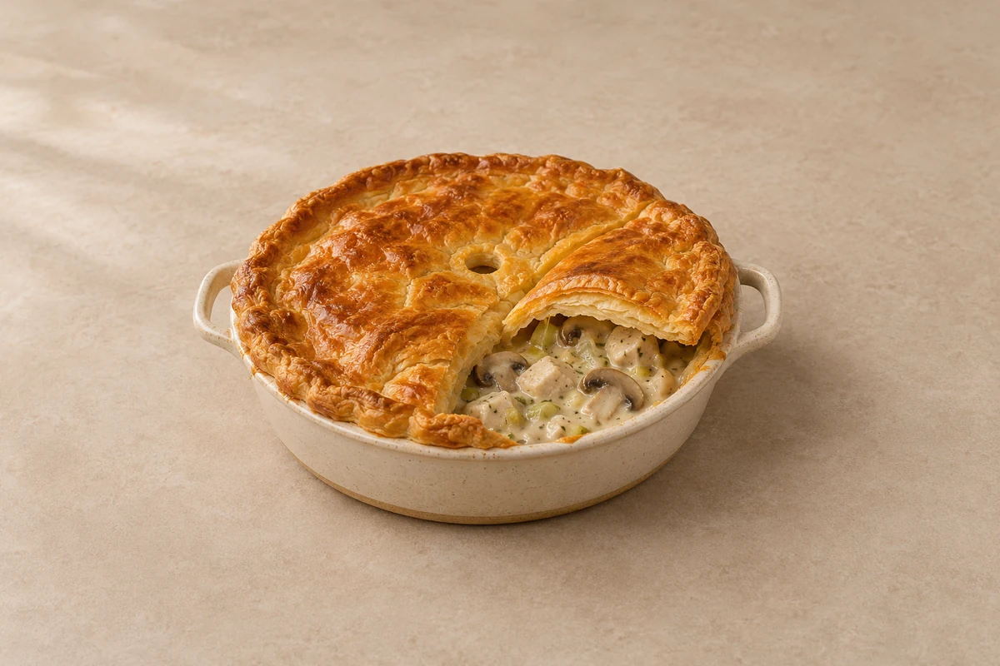

Bakes
Creamy Chicken, Leek & Mushroom Pie
Diced chicken breast, leeks and mushrooms in a creamy mustard sauce, topped with golden puff pastry. Serves 2.
Prep15 mins
Cook50–60 mins
people
Ingredient quantities update automatically

Ingredients
Method
Brown the chicken
Heat the oil in a deep frying pan over a medium-high heat. Brown the diced chicken breast for 4–5 minutes, then transfer to a plate.Cook the vegetables
Lower the heat to medium and melt the butter in the same pan. Add the leek and mushrooms. Cook for 8–10 minutes until softened and the mushroom liquid has evaporated. Add the garlic and cook for 1 minute.Make the sauce
Stir in the flour and cook for 1 minute. Gradually add the stock, stirring until smooth. Add the cream, mustard and thyme.Finish the filling
Return the chicken and its juices. Simmer gently for 8–10 minutes until the chicken is cooked through and the sauce is thick enough to coat it. Taste and season. Transfer to a roughly 18–20cm pie dish for 2 servings and let cool until no longer steaming. For larger quantities, use a larger dish or several dishes of a similar depth.Add the pastry
Heat the oven to 200°C / 180°C fan / gas 6. Brush the dish rim with beaten egg. Lay the pastry over the filling, trim and press onto the rim. Cut a small steam hole in the centre and brush the top lightly with egg.Bake
Bake for 25–30 minutes, until the pastry is risen and golden and the filling is piping hot. Keep the filling thick before adding the pastry so the lid stays crisp.